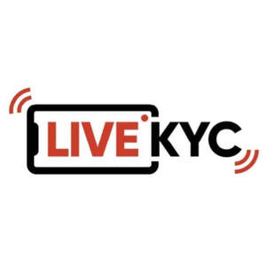

Trade Mark Journal No.2026/008 20 February 2026
UK00004322594 12 January 2026 (9,38,42,45)

- Class 9
- Downloadable software and mobile applications; Downloadable software and mobile applications for use in cyber security and data protection; data encryption apparatus; Security software; Computers for use in data management; Data communications software; Data networks; Utility, security and cryptography software; Software for network and device security; Data processing systems; Data processing software; Data storage programs; Data communications apparatus; Data and file management and database software; Software to control building environmental, access and security systems; Mobile application software; Downloadable mobile applications; antivirus software; Antispyware software; Programming software; Antimalware software; Debugging software; Electronic surveillance apparatus; Machine-to-Machine [M2M] applications; Security tokens [encryption devices]; Computer software for use as an application programming interface (API); Downloadable computer software for use as an application programming interface (API); Authentication software; threat detection software; software for detecting malware, phishing attempts, and preventing social engineering attacks; Security software based on WebAssembly, blocking bots and data scrapers without requiring CAPTCHA systems; Hardware-based security software, including fingerprint recognition and device ID creation solutions.
- Class 38
- Data Transmission Services, namely, secure data transmission solutions, including SSL pinning for secure network traffic; telecommunications services, namely, services that integrate mobile security with network management, providing data security and mobile device protection; high-Speed Internet Access with Security Services, namely, internet access services that enhance mobile security by securing connections and network traffic.
- Class 42
- Software as a Service (SaaS); Platform as a Service (PaaS); The design, development, and updating of security software and mobile security solutions; Development and hosting of computer platforms; Providing temporary use of non downloadable software applications via a website; Application service provider (ASP) featuring software for cyber security and data protection; Data security services; Data security consultancy; Computer security threat analysis for protecting data; Consultancy in the field of data security; Data encryption services; Computer programming services for electronic data security; Design and development of electronic data security systems; Cloud-based data protection services; Authentication services for computer security; Data decryption services; Data encryption and decoding services; Computer security system monitoring services; Monitoring of computer systems for security purposes; Monitoring of computer systems for detecting unauthorized access or data breach; Encryption, decryption and authentication of information, messages and data; Computer security services for protection against illegal network access; Provision of computer security risk management programs; Hosting of mobile applications; Development and design of mobile applications; Design and development of software in the field of mobile applications; Development of computer software application solutions; Data authentication via blockchain; User authentication services using blockchain technology; IT service management [ITSM]; User authentication services using single sign-on technology for online software applications; User authentication services using technology for e- commerce transactions; Application service provider [ASP] services; Platforms for artificial intelligence as software as a service [SaaS]; Software customisation services; Electronic monitoring of credit card activity to detect fraud via the internet; Computer virus protection services; Updating of computer software relating to computer security and prevention of computer risks; Maintenance of computer software relating to computer security and prevention of computer risks; Data security services [firewalls]; Services for detecting malware, phishing attacks, and social engineering threats in mobile applications and other digital platforms; Services providing hardware-based security solutions, including device pairing and security; consultancy on cyber security softwares and applications; consultancy on data protection software and applications.
- Class 45
- Fraud and identity theft protection services; identity validation services [personal background investigations]; consultancy in the field of data theft and identity theft; Security consultancy; Security services; Security inspection services for others.
FRAUD.COM INTERNATIONAL LTD
Representative: RightPro IP & Legal Consultancy Ltd.